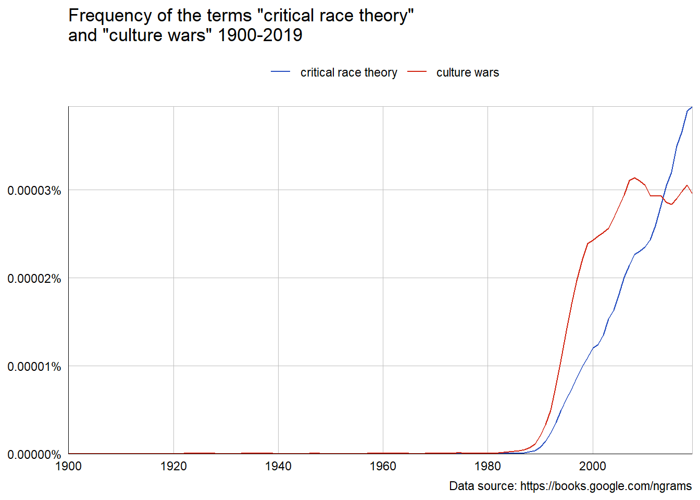
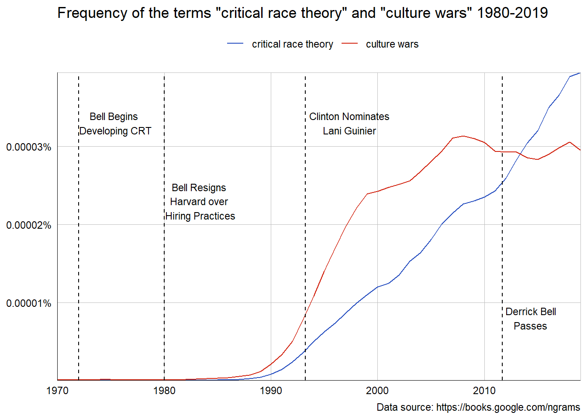
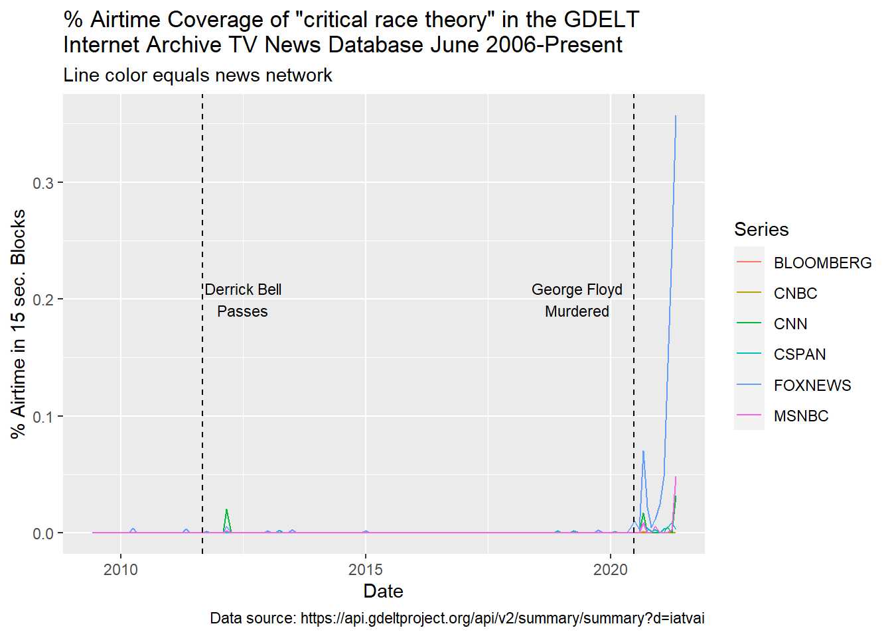
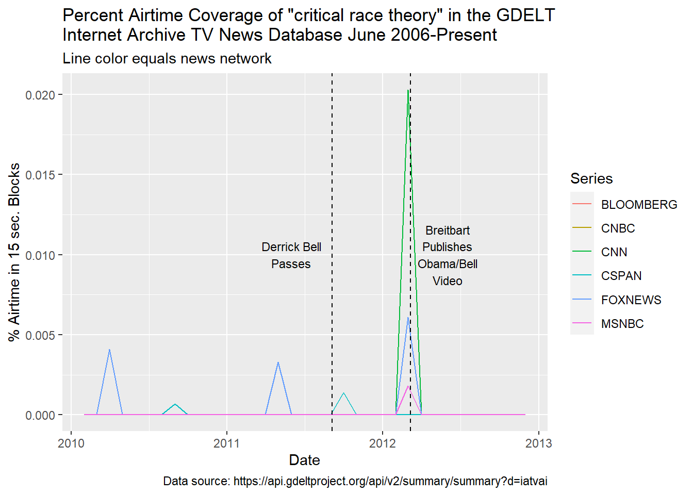
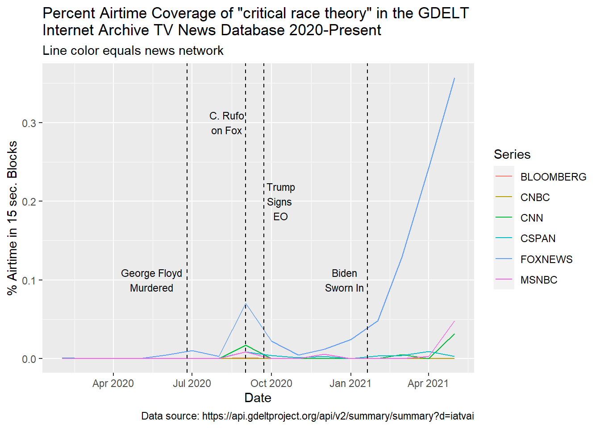
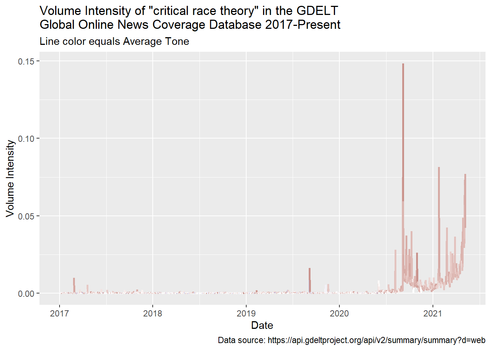
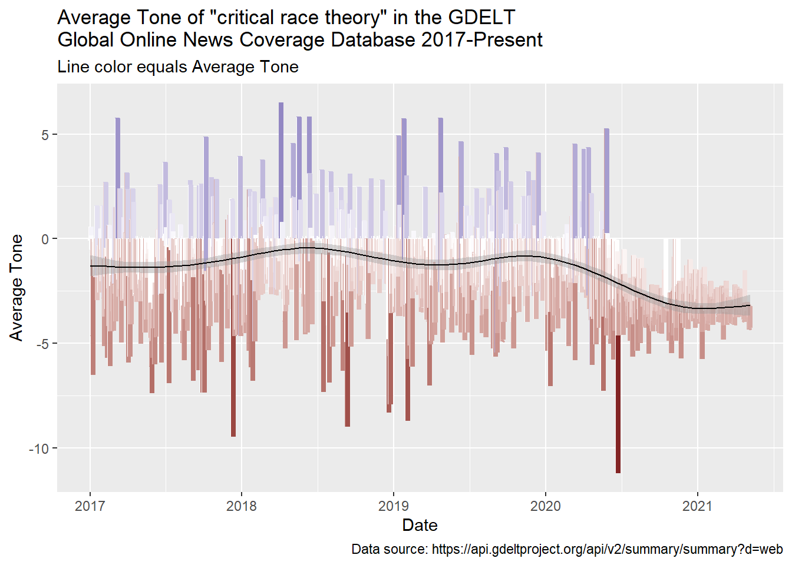
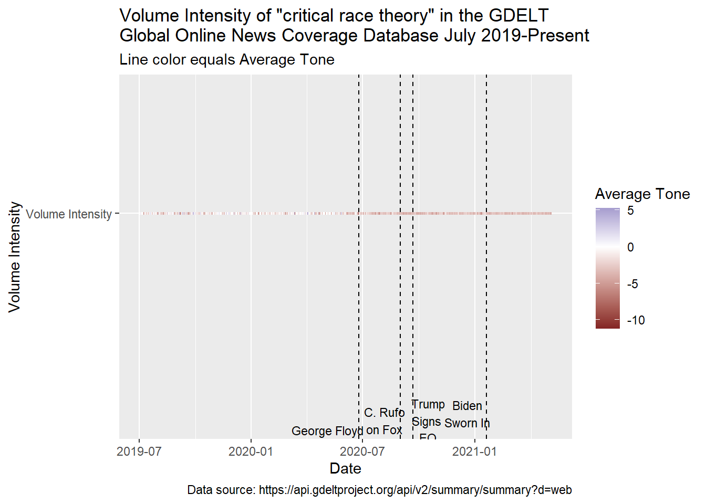
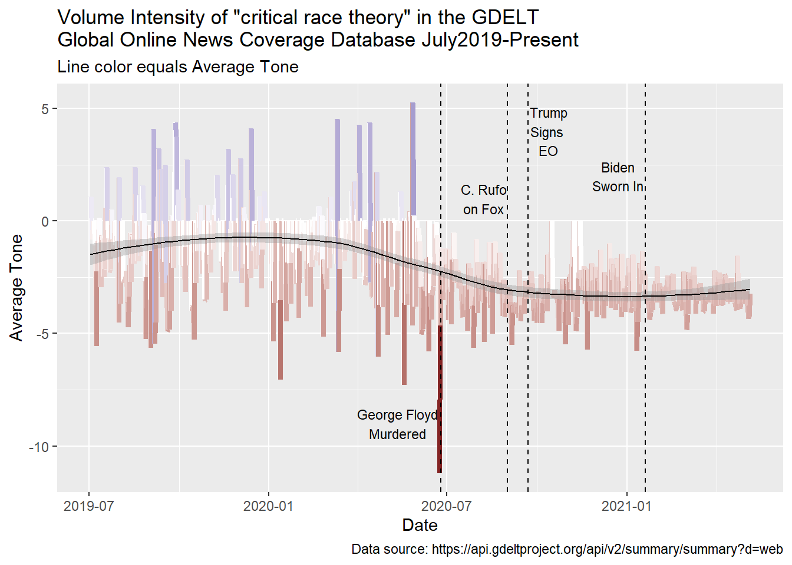

Critical Race Theory in the Media
race
This post explores coverage of critical race theory in texts and TV news over time. Evidence suggests there is a concerted effort on the part of select conservative media outlets to establish a moral panic regarding CRT, particularly as it is a component of educational curricula.
The spectator must need no thoughts of his own: the product prescribes each reaction, not through any actual coherence-which collapses once exposed to thought-but through signals. Any logical connection presupposing mental capacity is scrupulously avoided. Developments are to emerge from the directly preceding situation, not from the idea of the whole.
– Theodore Adorno and Max Horkheimer (2002, 109), “The Culture Industry: Enlightenment as Mass Deception” from Dialectic of Enlightenment: Philosophical Fragments.
Introduction
Did 2020 mark a watershed moment in public discourse regarding Critical Race Theory (CRT)? If yes, then why and in what context? On May 7, 2021 Adam Harris (2021) published an essay in The Atlantic Monthly entitled “The GOP’s ‘Critical Race Theory’ Obsession.” CRT was initially formulated in the 1970’s by Harvard Law Professor Derrick Bell (2008), his students continued to develop his ideas, and versions of the theory are now applied in a diversity of fields outside of law including education (Delgado and Stefancic 2017). Harris’s essay begins by looking at a series of controversial, and likely unconstitutional, new bills in states like New Hampshire, Arkansas, and Idaho that forbid the teaching of “divisive concepts” including Critical race theory (CRT). He suggests that the major uptick in coverage of CRT occurred following the release of the video showing Derek Chauvin slowly murdering George Floyd. Harris identified Christopher Rufo as the key reason that Fox news took interest in CRT, and observed that three weeks following Rufo’s appearance on Fox Trump passed an executive order banning CRT among federal agencies and contractors. With regard to news coverage, from Harris’s (2021) essay one can draw the following expectations:
- 2020 was a watershed moment in public discourse regarding CRT,
- discussion of CRT increased markedly after footage of George Floyd’s murder,
- current coverage of CRT is largely in conservative media outlets,
- and that coverage overwhelmingly negative.
The day Harris’s essay was published I set out to test these expectations using GDELT and Google Ngram data to explore large amounts of mass media coverage of CRT through distant reading. That very hastily written exploration confirmed expectations, allowed for specifying the change in coverage, and facilitated relating those changes to other relevant events.
This essay now represents a major revision of my initial quickly written engagement with Harris’s (2021) work. Since that time, several things occurred which prompted this major revision. First, I continued to deepen my understanding of GDELT data, and I realized that I was incorrectly discussing some of the data sets. That needed to be fixed. Second, following Harris, several others began to write about the increase in coverage of CRT. For example, on June 15 Power (2021) published a piece with Media Matters discussing how Fox news mentioned CRT over 1,900 times in the past three and a half months. In November Ray and Gibbons (2021) published an essay with the Brookings Institute addressing the question of why states are banning CRT, and they provided an inventory of legislative efforts on this front. I also spent more time studying the history of law in the US seeking to understand some of the other legal theories Bell discussed. Lastly, I wanted to expand the scope of my initial analysis, and flesh out some theoretical ideas from anthropology and sociology that I think are relevant to this case study. Namely, I wanted to address discourse, imagined community, and moral panic.
Findings
New findings include the fact that much of the uptick in negative coverage appears to have occurred after the inauguration of Biden and is focused on hyperbolic concerns regarding the teaching of CRT in schools. There was a small increase in coverage in during the protests following the murder of George Floyd, and coverage during this period is markedly negative. A larger spike in coverage occurred months later following the appearance of a guest on Fox news who made an explicit appeal to Trump to ban the teaching of divisive concepts, which included CRT. This request was fulfilled by Executive Order 13950. However, it was not until the searing in of Biden that CRT coverage grew in intensity. I argue that the bulk of the coverage represents an effort on the part of conservative media to establish and propagate a moral panic to create backlash against forms of CRT that are being promoted in classrooms.
Background
CRT Enters Public Discourse
Harris narrates a model of when and how CRT began to play a larger role in public conversations. Specifically, he suggests that CRT came to the forefront with Bill Clinton’s nomination of U. Penn Law School professor Dr. Lani Guinier to head up the Justice Department’s Civil Rights Division. Dubbed the “Quota Queen” by political opponents, Republicans began to launch an offensive against her nomination basing it part on her support for CRT. As Harris states:
The theory of CRT soon stood in for anything resembling an examination of America’s history with race. Conservatives would boil it down further: Critical race theory taught Americans to hate America. Today, across the country, school curricula and workplace trainings include materials that defenders and opponents alike insist are inspired by critical race theory but that academic critical race theorists do not characterize as such.
Having read some, though certainly not all of Bell’s work, I find it a stretch that Bell preached hatred of the US. In fact, given that he worked for a time as a U.S. Attorney in the Department of Justice it seems curious to claim that Bell hated the US. Interestingly, he did not seem to have been treated well by the department. The DOJ at one point force Bell to choose between giving up his membership with the NAACP or leave the DOJ. Bell chose to leave the DOJ and retain his membership in the NAACP. Still, despite these and other unreasonable challenges Bell faced as a pioneering Black legal mind, it is hard to find hatred in his writing. It may seem pessimistic at times. “Racial equality is, in fact, not a realistic goal” he once wrote (Bell 1991, 363) but his point was that “constantly aiming for a status that is unobtainable in a perilously racist America, black Americans face frustration and despair.” Here the John Henryism effect comes to mind James et al. (1987); James, Hartnett, and Kalsbeek (1983); James et al. (1992). Yet, argued this bleak situation is no reason to give up he argued because “[c]ontinued struggle can bring about unexpected benefits and gains that in themselves justify continued endeavor. The fight in itself has meaning and should give us hope for the future” (Bell 1991, 387). This line of argument strikes me as blunt, but not hateful.
Contemporary CRT
As an influential academic idea, CRT continued to grow even after Bell’s passing. Contemporary practicing proponents of CRT (Delgado and Stefancic 2017, 8–11) assert that:
- racism is an ordinary (though obviously undesirable) condition of society and not an aberration;
- that white-over-color ascendancy exists and serves multiple purposes for the dominant group;
- races are social constructs, the products of social though and relations;
- dominant society racalizes minority groups in different ways at different times, often in relation to changing labor demands;
- each socially constructed racial group has its own origins and unfolding history;
- and because of these diverse origins whites may not understand the experiences or struggles of racalized minorities.
Boiled down to these essential kernels, at least to this anthropologist it seems that CRT isn’t radical white bashing or America thrashing, but a constellation of reasoned positions derived from established diverse social science perspectives. If racism is an issue to resolve in society, how is one to address it with out candidly acknowledging its existence and assiduously defining its contours?
As with many academic theories (i.e. natural selection), in public discourse, nuance gets glossed to the point of abstraction beyond recognition. So it seems with characterizations of CRT as spiteful “America hating” racist propaganda which appears, at least from the clips above and another below, to be the perspective of Fox. Harris suggests that up until last year, Fox News gave only cursory attention to CRT with the first mention of the theory being in 2012 when Bell passed. At the time, Fox apparently ran footage of Obama lauding Bell’s theories and embracing him physically (Figure 1). For outlets like Fox, and the budding Breitbart News Network, this was evidence of Obama’s dangerous racial radicalism. As John Cook (2012) wrote at the time:
Barack Obama, in 1990, gave a speech saying nice things about a bad man named Derrick Bell. He also hugged the bad man, Derrick Bell. Ipso facto reduction ad absurdum habeas corpus hocus pocus, Barack Obama is a bad man as well. Airtight.
Harris also noted that Fox host Sean Hannity mentioned CRT in 2014 when discussing George Zimmerman’s trial for the murder of Trayvon Martin.
CRT and Executive Order 13950
Harris argues that Fox hosts began discussing CRT more frequently in 2020, after footage surfaced of Derek Chauvin slowly murdering George Floyd, and anti-racist literature surged to the forefront of the national conversation. Harris identifies Christopher Rufo, who published a July 9, 2020 essay opposing anti-racist training in Seattle schools, as being largely responsible for conservative media’s current passion regarding CRT. From the perspective of MPT, Rufo plays the role of a moral entrepreneur.
In early September of 2020, Rufo went on Fox’s Tucker Carlson show to talk about how CRT infiltrated all aspects of the government institutions, is being “weaponized against the American people,” being “weaponzed against core traditional american values,” and that this represents an “existential threat to the United Dates”. Rufo then explicitly called on Trump to issue an Executive Order “abolishing Critical Race Theory from the Federal government”. Evoking themes of Legal Formalism, Carlson replies arguing that “the underlying idea behind our entire justice system is that all of us are treated equally under the laws of the United States. Your race, your gender are irrelevant in the eyes of the law.” Carlson continues expressing concern that CRT themes, which he characterizes as “lies” and antithetical to the values of equal protection, are being presented at DOJ diversity trainings. Rufo rejoinders that the administrative apparatus of the federal government has abandoned the notion of equal protection based on individual merits and is now assessing people based on group identity. “We need to be unified by our equality under the law or we won’t be unified” Carlson ominously concludes.
Prior to 2020, the Fox-Trump feedback loop was already well documented (Gertz 2018; Maza 2018; Chang 2017), and appears to have played a key role in the making of public policy regarding CRT—which further challenges Legal Formalism’s assertion that the law is independent of other social institutions. On September 22, 2020, less than a month after Mr. Rufo made his plea to Trump on Fox, Trump signed an Executive Order (EO) 13950 entitled “Combating Race and Sex Stereotyping.” The order explicitly included prohibitions on the teaching “divisive concepts” by federally funded agencies. Though not mentioned by name in the order, it is abundantly clear that CRT was among the “divisive concepts” the order sought to silence.
On September 25, 2020 Rufo appeared on Lou Dobbs praising Trump for EO 13950 talking about how CRT was an insidious threat that had been around for years but was just coming to the surface. Dobbs congratulated Rufo on all the work he did to expose and oppose CRT saying “the tide is beginning to turn because of your extraordinary efforts, and again I want to commend you for doing so.” Dobbs went on to express concern that CRT is an effort to “turn America upside down.”
Rufo is the moral entrepreneur who identifies a threatening folk devil lurking in our midst. As a private citizen, flexing his constituent power, FOX News played a role in broadcasting Rufos’ message to the highest office of constituted power–President Trump, who in turn took decisive executive action. Following this, Rufo was covered again and explicitly congratulated for his successful moral entrepreneurship.
Internet ArchiveShortly after its signing, EO 13950 was challenged in courts. On his first day in office, Biden rescinded EO 13950 by issuing EO 13985 “Advancing Racial Equity and Support for Underserved Communities Through the Federal Government.” However, before that change, at my university (a Hispanic serving institution located on the US-Mexico border), on October 14, 2020 members of my department received a pdf from the Dean of the College regarding EO 13950. The file said the target of EO 13950 was “workforce/employee training” and applied to “federal contractors, and subcontractors, federal agencies, employers receiving federal grants, Armed Services/ROTC.”
The University’s Office of Management and Budget indicated that divisive concepts could be discussed but only “in an objective manner and without endorsement,” which the university suggested “appears to carve out academic instruction.” Personally, were it not for the pernicious character of a campus gag order regarding “divisive concepts”, which is antithetical to academic freedom, I would find the notion of objective discussion without endorsement quaint and bemusing. Objective discussion is not possible because objective truths exist independent of individual subjectivity; therefore, since any discussion is among human beings who have subjective perspectives those discussion aren’t objective (c.f. Merleau-Ponty 1962). Something like scientific objectivity is an ideal, a laudable one at that. Of coarse science as practiced by humans is still ultimately subjective in the strict sense. Anthropology, which many consider a science of culture, has a history of trying to achieve the position of neutrally observing the other. Yet, it remains inescapable that the observer is always situated in by their perspective and experience (Rosaldo 1993).
Still, apparently the carve out was only under the condition that discussion was done without endorsement. Given the plain reading of “without endorsement” it means one is not to say “given assembled evidence, this idea appears to have merits,” “this theory holds explanatory power,”or even “the idea is compelling personally, what do you think?” At least to my knowledge, within my department, and certainly within my classes, EO 13950 went unheded, and if anything prompted the Streisand effect leading to discussions on the importance of intellectual freedoms.
Summary and Research Question
My limited understanding of CRT revolves largely around two of Bell’s arguments. The first is the “interest convergence thesis”, that racial equality will only be accommodated when it converges with the interest of whites. For better or worse, self interest is a common assumption among an incredibly diverse range of social science theories (Sahlins 2008). The second is the “racial realist thesis” that law is impacted by society and social processes (Bell 1991), which in the case of the United States entails prejudicial treatment of people of color. The assertion that law is part of and influenced by society is hardly radical. As someone who studies immigration detention and mass incarceration, which are wildly prejudicial against people of color Kurzban (1993), my understanding of at least two components of Bell’s project strike me as tenable arguments. Being interested in Harris’s assertions about negative discussions of CRT–specifically the timing and nature of coverage in public discourse I attempted to pursue the question further.
Did 2020 represent a watershed moment ushering in significant negative coverage of CRT on Fox news?
Methods
To address changing coverage of CRT in public discourse, I adopted aspects of the “culturomics” Michel et al. (2011) approach which involves distant reading (Schulz 2011; Moretti 2013) of large quantities of text. This approach can be extended in principle to other kinds of mass media big data–like TV news (Leetaru 2011). I adhere to the position that print capital and other forms of mass media can be powerful tools for crafting an imagined community (Anderson 2006) and that systematic programming for a specific purpose can, like advertising, shape public opinion (Wolfe 2018; Ellul 1973). Thus, monitoring these broadcasts can reveal important insights regarding social movements, like CRT and reactions against it.
Data Sets
The term “critical race theory” was searched in three data sets:
- Google Ngram Viewer: American English 2019 corpus which consists of “Books predominantly in the English language that were published in the United States” between 1800-2019.
- Global Database of Events, Language, and Tone (GDELT) Internet Archive TV News data base: This data set consists of closed caption transcripts of broadcasts from 2006 to the present sampled in 15 second intervals. The volume intensity of coverage is parsed by news network.
- GDELT Global Online News Coverage: This dataset set of online news text covers from 2017 to the present. This data set includes information the tone of news coverage.
The Google Ngram Viewer is an outgrowth of Michel et al.’s (2011) “culturomics.” To access these data, I used the ngramr (Carmody 2020) package to query the data set and graph the search results, then I annotated that graph with key dates identified by Harris.
The GDELT TV News data sets, pioneered by Leetaru (2011) are characterized as culturomics 2.0 because they are audiovisual primarily and text, in the form of closed caption transcripts, is derived from this. The Google Ngram data set began as analog books and were scanned, the GDELT TV News begins as broadcast, text is applied to it, and this is the text that is searched.
To access the TV News data, I exported a comma delimited file that was wrangled with the tidyverse package (Wickham 2019) which was plotted and annotated with ggplot2 (Wickham et al. 2020). It is probably better to access the API directly, and I wrote a bit about approaches to doing that.
The GDELT Global Online News data set is similar to Google Ngram Viewer in that both are “text first” data rather than “text derived” data like TV News. The Global Online News data set updates regularly and it also estimates sentiment. I’m not sure the method of sentiment analysis applied, but I suspect it is probably dictionary based and does not account for valence shifts. It would be good to find out more about the sentiment estimators GDELT uses.
Searches
In Google’s Ngram Viewer, both the terms “critical race theory” and “culture wars” were searched. The latter was included because Harris’s article mentions “culture wars” along with the term CRT. Culture wars is an term whose initial use predates the GDELT data sets so I did not include it when searching those data sets. Unfortunately, the Google Ngram corpus only extends up to 2019 and many of the events Harris discusses occur in 2020. Moreover, TV news and specifically Fox news is a key place where Harris argues CRT is discussed in negative terms. The term “culture wars” was not searched in the two GDELT data sets.
Results
Google ngram Data Set
An initial view of Google’s Ngram Viewer database shows no mention of CRT prior to the 1980’s (Figure 2), a decade after the theory’s formulation in 1973. Narrowing down the span of coverage shows an increase in the use of the term in the late 1980’s, after leaving Harvard (to take a Deanship at University of Oregon) but before Clinton nominated Lani Guinier (Figure 3). Figure 3 indicates the early 1990’s was a major inflection point of increasing use of the term in print media. Throughout the period from the late 1980’s up to Derrick Bell’s pasing in 2011, the term “Culture Wars” is used more frequently than CRT. However, within a few years of Bell’s passing CRT surpassed “Culture Wars” in print sources. This is in part because the term “Culture Wars” began to wane in frequency after about 2009 while at the same time the frequency of CRT continued to climb steadily.


GDELT Internet Archive TV News Data Set
The GDELT Internet Archive TV News data set allows tracking of the term CRT from 2006 to the present across six TV networks. Figure 4 shows there is a slight increase in news coverage of the term not long after Bell’s passing. Looking more closely at the months before and after Bell’s passing (Figure 5) reveals three instances of Fox coverage, two before Bell passes and once after. CSPAN is the network that covered CRT immediately following Bell’s passing.

The most notable spike in coverage was in the early months of 2012 and the majority of it occurred on CNN. This spike, which occurred on March 7, 2012 corresponds to Breitbart releasing the Obama video mentioned above. On May 8, Breitbart Editor-In-Chief “Joel Pollak clashed with CNN host Soledad O’Brien about the significance of the video” and CRT (Crugnale 2012). Pollak claimed the video was a “bombshell” because Bell’s CRT “holds that the civil rights movement was a sham” and that the theory was racist. That same day the conservative National Review published an article suggesting furor over the Obama-Bell video was not significant (French 2012). Also on may 8, The Atlantic ran a piece by conservative writer Conor Friedersdorf (2012) who said “the controversy over the video is a big nothing-burger,” and concluded the essay asserting that “[t]o label someone as a racist for honesty conveying his dark view of human nature is the sort of politically correct, reductive stifling of speech that conservatives are supposed to stand against.” While some actors in conservative media (Brietbart and Fox) were promoting outrage over the video, other conservative venues (National Review) and writers (Friedersdorf ) characterized it as basically a tempest in a teapot.

Looking at the period of time from 2020 to the present, after the murder of George Floyd, there is a slight increase in coverage of CRT on Fox (Figure 6). However, it increases sharply with the appearance of C. Rufo on the network and then begins to decline. Interestingly, mentions of CRT continue to decline through the signing of Trump’s EO 13950. It is not until January 2021 that coverage of CRT begins to sharply spike with nearly all of it being on Fox. By April 2021, other networks begin to pick up coverage of CRT but only following a massive spike on Fox that begins in January 2021. Notably, the period leading up to and following the swearing in of Biden is associated with a sharp increase in Fox coverage of CRT. What is the tone of that coverage? As the news clips in the Introduction show, Fox’s coverage often expresses concern with the teaching of CRT in schools. In fact, reviewing post 2020 coverage of CRT on Fox, this seems to be the overwhelming source of concern for the network.

GDELT Global Online News Coverage Data Set
The GDELT Global Online News Coverage data set provides information on the volume of online news coverage and estimates that coverage’s tone. Figure 7 shows generally low level coverage of CRT before the latter half of 2020. There are two small spikes of coverage, the first occurring in the early part of 2017 and the other in the latter half of 2019. The majority of coverage Volume Intensity in online news coverage occurs after June 2020, which represents the period after Floyd’s murder and around the time of C. Rufo’s appearance on Fox. On average, with a slight rise in the middle of 2018 and another in early 2020, the coverage is of a generally negative tone (Figure 8). It bears mention that nearly all search terms seems to have a negative tone. For example, even a search on “money” produces negative tone. In my experience, this is common in news data which seem to largely produce negative tone estimates regardless of the method or subject matter.
New names:
* `Series` -> `Series...2`
* `Value` -> `Value...3`
* `Series` -> `Series...4`
* `Value` -> `Value...5`
`geom_smooth()` using method = 'gam' and formula 'y ~ s(x, bs = "cs")'
Looking more closely at the period from July 2019 to the present, it is clear that coverage starts to spike around August, 2021 and is almost entirely negative (Figure 9 and Figure 10). George Floyd’s murder does not seem to correspond with an uptick in Volume Intensity in CRT, but it corresponds precisely with the greatest negative Average Tone for CRT in the entire series. C. Rufo’s appearance on Fox corresponds with a major peak in Volume Intensity but does not register a major anomaly in Average Tone, though Average Tone regarding CRT was already declining since the murder of George Floyd. There is no major spike in Volume Intensity corresponding with the signing of EO 13950, nor does the moment stand out in regards to Average Tone. There is a spike in Volume Intensity when Biden was sworn in, and there is a small negative Average Tone anomaly that precedes Biden’s inauguration. Referring back to the previous section and Figure 6 it is clear that nearly all of the coverage of CRT since September 2020 is on Fox. Samples of key clips from Fox covering the theme of CRT, it seems consistently linked with both the 1619 project and the teaching of CRT in schools.

`geom_smooth()` using method = 'loess' and formula 'y ~ x'
Discussion
Harris proposed that while Fox had given negative coverage to CRT in the past, its current fixation is a recent effort to rekindle the Culture Wars, began to increase after the murder of George Floyd, and was specifically prompted by C. Rufo’s appearance on Fox (who is on the left in the clip above). Google’s Ngram Viewer indicates that mentions of CRT didn’t begin until the early 1990’s (Figure 3), that mentions of CRT have grown steadily and eventually in 2010 surpassed “Culture Wars” in terms of frequency of use. GDELT’s Internet Archive TV News data set shows a staggering increase in coverage of CRT after the Murder of George Floyd (Figure 4) and it appears very tightly timed with C. Rufo’s September 2020 appearance on Fox (Figure 6). It seems that coverage of C. Rufo prompted Trump to sign EO 13950 attempting to control the teaching of “divisive concepts” with federal funds. Materials I received at my institution named CRT at the top of the list of “divisive concepts.” While Rufo’s plea on Fox may have prompted Trump to take action, and serves as another example of the Fox-Trump feedback loop, coverage of CRT continued to wane through this period. It was not until the months leading up to Biden’s swearing in that Fox began covering CRT again and with more volume than ever recorded. The GDELT Global Online News Coverage data set shows that coverage is overwhelmingly negative (Figure 7) through Figure 10). Significantly, the moment of greatest negative Average Tone regarding CRT, occurred exactly when George Floyd was murdered, though Volume Intensity of CRT does not pick up until C. Rufo’s appearance on Fox. Sampling of individual clips, like those presented throughout this essay, show that Fox’s negative coverage emphasizes the teaching of CRT in schools. The most recent coverage appears to be simulated by proposals from within the Biden administration to address social inequality.
While the data reviewed here may suggest slight variations on the scenario presented by Harris, his propositions are largely corroborated by a “culturomic” Michel et al. (2011) distant reading (Schulz 2011; Moretti 2013) of large quantities of printed and online text as well as TV news transcripts. This approach allowed for a tighter temporal focus, a clear sense of the amplitude of change, and afforded some qualitative spot checking of the actual coverage. The question remains, why do some conservative media outlets seem to have this “obsession” with negative portrayals of CRT?
Stanley Cohen’s (2011b, 2011a) “Moral Panic” theory (MPT) is another highly influential academic idea whose name made it into general public discourse though it never achieved the extent of coverage of CRT. However, both MPT and CRT are frequently over simplified into unfaithfully unrecognizable abstractions. Cohen’s MPT is about collective over reactions to what are perceived as threatening “folk devils”, essentially scapegoats, that are believed to pose a far greater danger to society than they actuality do. Within MPT there are debates as to where in social panics originate. Are they spontaneous and come from the populous (bottom up); are they crafted by elites (top down); or do they come from moral entrepreneurs and coalitions somewhere in between (middle out)? There are compelling arguments for all three models of process, they aren’t mutually exclusive, and instead represent diverging fruitful extensions of Cohen’s initial ideas. Regardless of the source of the panic, media plays a key and critical role in propagating and sustaining the outrage and over reaction in each of the proposed sources of moral panics (Goode and Ben-Yehuda 2009; Critcher et al. 2013). Since print capital and mass media are central to forging the imagined community (Anderson 2006), the notion that mass media plays a key role in the propagation of moral panics comes as little surprise.
While there are many variations on MPT, few address moral panics that arise out of ideas alone–most are about classes of “dangerous” people–Cohen’s folk devils. Fox’s coverage seems to link CRT with Black Lives Matter, which can be construed as a potential folk devil in the sense of Cohen’s theory. However, the folk devils of moral panics are not generally intellectual theories–but I see no reason they couldn’t be.
Conclusion
CRT, which from my admittedly incomplete reading, seems perfectly well reasoned based on both historical fact and widely accepted assertions about individual and group behavior– strikes me not as a dangerous idea but a penetrating intellectual analysis worth consideration. As human constructs, all theories are imperfect and thus they need to be challenged and defended on civil terms; this dialectic process strengthen theory. Yet, tilting at theoretical windmills won’t advance intellectual understanding, it just leads to confusion.
Perhaps some school applications of CRT are misguided and in need of calibration, I can’t yet say. However, given the misrepresentation of other theories in educational settings that is not beyond the imaginable. While I have not reviewed individual school curricula in question, which may deviate from the core of CRT, Fox’s coverage and Mr. Rufo’s characterizations seem more like fictional straw-men than faithful renditions.
Fox’s presentation of CRT, which is a soundly argued legal theory, as espousing white self loathing and hatred of the nation, is at the most generous I can muster–misguided over reaction. Even conservative writers have expressed concern over exaggerated treatments of CRT by the likes of Breitbart and Fox. At worse, the high volume of hyperbolically negative treatment of CRT by Fox suggests a calculated effort to create a moral panic by casting those who embrace anti-racist theory as dangerous folk devils who threaten the very fabric of society. The general expense of media coverage, the recent explosion of that coverage, its generally narrow sources, coupled with the explicit effort to organize and exercise political power to oppose CRT, point towards efforts to conjure a media base middle out moral panic, essentially systematic propagandizing, designed to sway public opinion. Intriguingly the panic seems largely directed at a theory, but is likely painted on those who espouse the ideas of CRT. Rather than name the problem of racism, define it, and work on the issue, some–it would seem, are unsatisfied merely ignoring the problem’s existence–but seek to actively assert that addressing issue head on with clear eyes is itself a dangerous and divisive act. In many ways, Fox’s pearl clutching and moral panic over fabricated forms of CRT is actually well predicted by the theory itself.
References
Alexander, Michelle. 2012. The New Jim Crow: Mass Incarceration in the Age of Colorblindness. Revised edition. New York: New Press.
Anderson, Benedict R. O’G. 2006. Imagined Communities: Reflections on the Origin and Spread of Nationalism. Rev. ed. London ; New York: Verso.
Bell, Derrick. 1991. “Racial Realism.” Connecticut Law Review 24: 363–79. https://heinonline.org/HOL/Page?handle=hein.journals/conlr24&id=383&div=&collection=.
———. 2008. Race, Racism, and American Law. 6th ed. New York: Aspen Publishers.
Bernstein, Fred A. 2011. “Derrick Bell, Law Professor and Rights Advocate, Dies at 80.” The New York Times, October. https://www.nytimes.com/2011/10/06/us/derrick-bell-pioneering-harvard-law-professor-dies-at-80.html.
Bourdieu, Pierre. 2019. Outline of a Theory of Practice. https://doi.org/10.1017/CBO9780511812507.
Carmody, Sean. 2020. Ngramr: Retrieve and Plot Google n-Gram Data. https://github.com/seancarmody/ngramr.
Chang, Alvin. 2017. “We Analyzed 17 Months of Fox & Friends Transcripts. It’s Far Weirder Than State-Run Media.” https://www.vox.com/2017/8/7/16083122/breakfast-club-fox-and-friends.
Cohen, Stanley. 2011a. Folk Devils and Moral Panics: The Creation of the Mods and Rockers. Routledge Classics. Abingdon, Oxon ; New York: Routledge.
———. 2011b. “Moral Panics as Cultural Politics: Introduction to the Third Edition.” In, 3rd ed., vi–xliv. Routledge Classics. Abingdon, Oxon ; New York: Routledge.
Cook, John. 2012. “Why We’re Talking About Barack Obama and Derrick Bell Now.” http://gawker.com/5891738/why-were-talking-about-barack-obama-and-derrick-bell-now.
Critcher, C., Jason Hughes, Julian Petley, and Amanda Rohloff, eds. 2013. Moral Panics in the Contemporary World. New York: Bloomsbury.
Crugnale, James. 2012. “Soledad O’Brien And Breitbart’s Joel Pollak Clash Over Critical Race Theory.” https://www.mediaite.com/tv/soledad-obrien-and-breitbarts-joel-pollak-clash-over-critical-race-theory/.
Delgado, Richard, and Jean Stefancic. 2017. Critical Race Theory: An Introduction. Third edition. New York: New York University Press.
Ellul, Jacques. 1973. Propaganda: the formation of men’s attitudes. New York: Vintage Books.
Escobar, Martha D. 2016. Captivity Beyond Prisons: Criminalization Experiences of Latina (Im)migrants. First edition. Austin: University of Texas Press.
Foucault, Michel. 1978. The history of sexuality. 1st American ed. Vol. I. New York: Pantheon Books.
———. 1995. Discipline and Punish: The Birth of the Prison. 2nd Vintage Books ed. New York: Vintage Books.
French, David. 2012. “Obama, Critical Race Theory, and Harvard Law School.” https://www.nationalreview.com/corner/obama-critical-race-theory-and-harvard-law-school-david-french/.
Friedersdorf, Conor. 2012. “The Sci-Fi Story That Offends Oversensitive White Conservatives.” https://www.theatlantic.com/politics/archive/2012/03/the-sci-fi-story-that-offends-oversensitive-white-conservatives/254232/.
García Hernández, César Cuauhtémoc. 2009. “La Migra in the Mirror: Immigration Enforcement and Racial Profiling on the Texas Border.” Notre Dame Journal of Law, Ethics & Public Policy 23: 167–96. http://scholarship.law.nd.edu/ndjlepp/vol23/iss1/6.
———. 2019. Migrating to Prison: America’s Obsession with Locking up Immigrants. New York: The New Press.
Garner, Bryan A., and Henry Campbell Black, eds. 2009. Black’s Law Dictionary. 9th ed. St. Paul, MN: West.
Gertz, Matthew. 2018. “I’ve Studied the Trump-Fox Feedback Loop for Months. It’s Crazier Than You Think.” http://politi.co/2Av9v0f.
Goode, Erich, and Nachman Ben-Yehuda. 2009. Moral Panics: The Social Construction of Deviance. 2nd ed. Chichester, U.K. ; Malden, MA: Wiley-Blackwell.
Harris, Adam. 2021. “The GOP’s ‘Critical Race Theory’ Obsession.” https://www.theatlantic.com/politics/archive/2021/05/gops-critical-race-theory-fixation-explained/618828/.
Helton, Arthur C. 1986. “The Imprisonment of Refugees in the United States.” In Defense of the Alien 9: 130–37. https://www.jstor.org/stable/23140908.
———. 2002. The Price of Indifference: Refugees and Humanitarian Action in the New Century. Oxford ; New York: Oxford University Press.
Horkheimer, Max, and Theodor W. Adorno. 2002. Dialectic of Enlightenment: Philosophical Fragments. Cultural Memory in the Present. Stanford, Calif: Stanford University Press.
James, Sherman A., Sue A. Hartnett, and William D. Kalsbeek. 1983. “John Henryism and Blood Pressure Differences Among Black Men.” Journal of Behavioral Medicine 6 (3): 259–78. https://doi.org/10.1007/BF01315113.
James, Sherman A., Nora L. Keenan, David S. Strogatz, Steven R. Browning, and Joanne M. Garrett. 1992. “Socioeconomic Status, John Henryism, and Blood Pressure in Black Adults.” American Journal of Epidemiology 135 (1): 59–67. https://doi.org/10.1093/oxfordjournals.aje.a116202.
James, Sherman A., David S. Strogatz, Steven B. Wing, and Diane L. Ramsey. 1987. “Socioeconomic Status, John Henryism, and Hypertension in Blacks and Whites.” American Journal of Epidemiology 126 (4): 664–73. https://doi.org/10.1093/oxfordjournals.aje.a114706.
Jones, Keith. 2013. “American Nativism and Exclusion: The Rise and Fall of the Immigration Restriction League, 18941921.” PhD thesis, Washington D. C. https://repository.library.georgetown.edu/bitstream/handle/10822/558359/Jones_georgetown_0076M_12074.pdf;sequence=1.
Kurzban, Ira J. 1993. “United States Policy Toward Haitian Refugees: Is It Only Institutionalized Racism?” In Defense of the Alien 16: 130–34. http://www.jstor.org/stable/23140869.
Leetaru, Kalev. 2011. “Culturomics 2.0: Forecasting Large-Scale Human Behavior Using Global News Media Tone in Time and Space.” First Monday 16 (9). https://doi.org/https://doi.org/10.5210/fm.v16i9.3663.
Maza, Carlos. 2018. “The Trump-Fox & Friends Feedback Loop, Explained.” https://www.vox.com/2018/2/9/16997022/strikethrough-trump-fox-friends-feedback-loop-explained-tweet.
Merleau-Ponty, Maurice. 1962. Phenomenology of Perception. http://archive.org/details/merleaupontyphenomenologyofperception_201909.
Michel, Jean-Baptiste, Yuan Kui Shen, Aviva Presser Aiden, Adrian Veres, Matthew K. Gray, The Google Books Team, Joseph P. Pickett, et al. 2011. “Quantitative Analysis of Culture Using Millions of Digitized Books.” Science 331 (6014): 176–82. https://doi.org/10.1126/science.1199644.
Moretti, Franco. 2013. Distant Reading. London ; New York: Verso.
Ngai, Mae M. 1999. “The Architecture of Race in American Immigration Law: A Reexamination of the Immigration Act of 1924.” The Journal of American History 86 (1): 67–92. https://doi.org/10.2307/2567407.
———. 2003. “The Strange Career of the Illegal Alien: Immigration Restriction and Deportation Policy in the United States, 19211965.” Law and History Review 21 (1): 69–108. https://doi.org/10.2307/3595069.
Power, Lis. 2021. “Fox News’ Obsession with Critical Race Theory, by the Numbers.” https://www.mediamatters.org/fox-news/fox-news-obsession-critical-race-theory-numbers.
Ramet, Sabrina P., and Christine M. Hassenstab. 2013. “The Know Nothing Party: Three Theories about Its Rise and Demise.” Politics and Religion 6 (3): 570–95. https://doi.org/10.1017/S1755048312000739.
Ray, Rashawn, and Alexandra Gibbons. 2021. “Why Are States Banning Critical Race Theory?” https://www.brookings.edu/blog/fixgov/2021/07/02/why-are-states-banning-critical-race-theory/.
Rosaldo, Renato. 1993. “Introduction: Grief and a Headhunter’s Rage.” In, 1–24. Boston: Beacon Press.
Sahlins, Marshall. 2008. The Western Illusion of Human Nature: With Reflections on the Long History of Hierarchy, Equality and the Sublimation of Anarchy in the West, and Comparative Notes on Other Conceptions of the Human Condition. Chicago (Mich.): Prickly paradigm press.
Schulz, Kathryn. 2011. “What Is Distant Reading?” The New York Times, June. https://www.nytimes.com/2011/06/26/books/review/the-mechanic-muse-what-is-distant-reading.html.
Stocking, George W. 1966. “Franz Boas and the Culture Concept in Historical Perspective.” American Anthropologist 68 (4): 867–82. https://www.jstor.org/stable/670404.
Tichenor, Daniel J., and Richard A. Harris. 2002. “Organized Interests and American Political Development.” Political Science Quarterly 117 (4): 587–612. https://doi.org/10.2307/798136.
———. 2005. “The Development of Interest Group Politics in America: Beyond the Conceits of Modern Times.” Annual Review of Political Science 8 (1): 251–70. https://doi.org/10.1146/annurev.polisci.7.090803.161841.
Wickham, Hadley. 2019. Tidyverse: Easily Install and Load the Tidyverse. https://CRAN.R-project.org/package=tidyverse.
Wickham, Hadley, Winston Chang, Lionel Henry, Thomas Lin Pedersen, Kohske Takahashi, Claus Wilke, Kara Woo, Hiroaki Yutani, and Dewey Dunnington. 2020. Ggplot2: Create Elegant Data Visualisations Using the Grammar of Graphics. https://CRAN.R-project.org/package=ggplot2.
Wolfe, Audra. 2018. “Project Troy: How Scientists Helped Refine Cold War Psychological Warfare.” https://www.theatlantic.com/science/archive/2018/12/project-troy-science-cold-war-psychological-warfare/576847/.